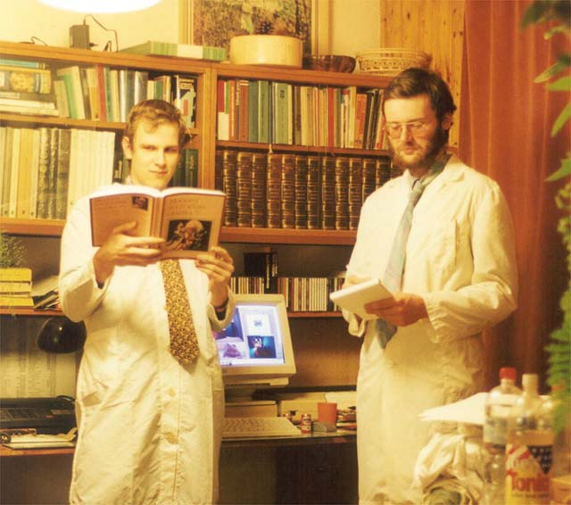
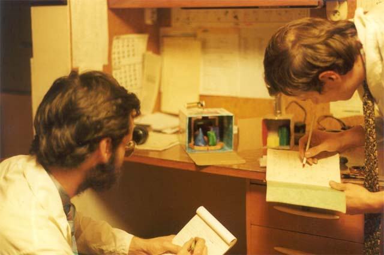
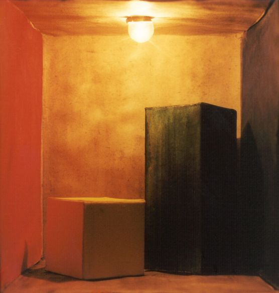
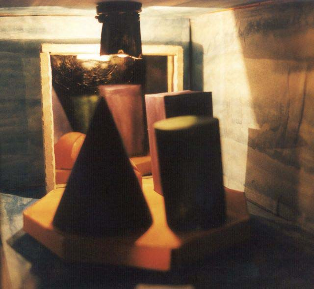

pøípitek na dal¹í výzkum
Pøi kompozici obrazu zále¾í mnoho na dobrém rozdìlení svìtel a stínù. Mistrem rozvr¾ení svìtel a stínù byl slavný holandský malíø XVII. stol. Rembrandt. Také zále¾í mnoho na správné perspektivì stínu. Stíny zdají se nám býti èerné nebo aspoò ¹edé, av¹ak ve skuteènosti není tomu tak.Teyssler-Koty¹ka, Technický slovník nauèný

studium referenèních scén

Cornell box

Zrcadlo+toèna
pøípitek na dal¹í výzkum